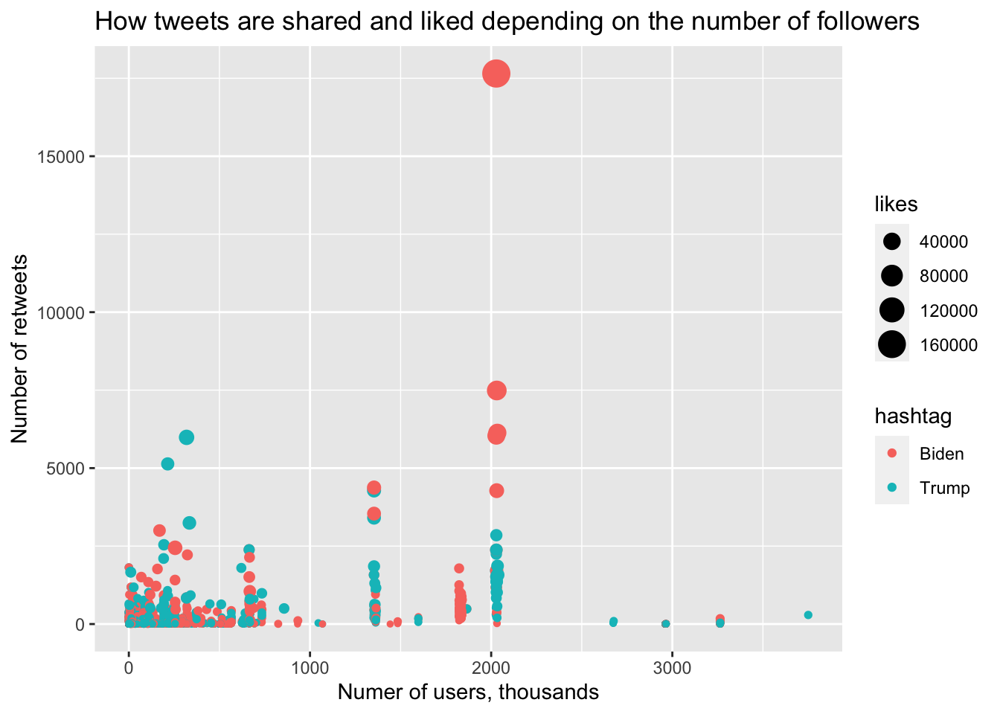

Importing datasets and making dates “tidy-er”
trump_df =
merge(
read_csv("./datasets/trump1.csv"),
read_csv("./datasets/trump2.csv"),
all = TRUE
) %>%
select(!X1) %>%
separate(created_at, into = c("creation_date", "creation_time"), sep = " ") %>%
separate(creation_date, into = c("creation_year", "creation_month", "creation_day"), sep = "-") %>%
separate(user_join_date, into = c("join_date", "join_time"), sep = " ") %>%
separate(join_date, into = c("join_year", "join_month", "join_day"), sep = "-") %>%
mutate(hashtag = "Trump")
biden_df =
merge(
read_csv("./datasets/biden1.csv"),
read_csv("./datasets/biden2.csv"),
all = TRUE
) %>%
select(!X1) %>%
separate(created_at, into = c("creation_date", "creation_time"), sep = " ") %>%
separate(creation_date, into = c("creation_year", "creation_month", "creation_day"), sep = "-") %>%
separate(user_join_date, into = c("join_date", "join_time"), sep = " ") %>%
separate(join_date, into = c("join_year", "join_month", "join_day"), sep = "-") %>%
mutate(hashtag = "Biden")Description of the dfs: date of tweet (y,m,d), tweet_id (may be issues with column format), tweet, # of likes, reshares, user, followers, location (city, country, state, lat-long)
Joining dfs and subsetting for US
# tweets = merge(biden_df, trump_df, all = TRUE)
# Subset with USA tweets only
tweets_usa =
merge(biden_df, trump_df, all = TRUE) %>%
filter(country == "United States of America")Election stuff
election_df =
read_csv("./datasets/president_county_candidate.csv") %>%
group_by(state, party) %>%
mutate(party_total = sum(total_votes)) %>%
ungroup() %>%
group_by(state) %>%
mutate(state_winner = case_when(
party_total == max(party_total) ~ TRUE,
party_total != max(party_total) ~ FALSE),
state_total = sum(total_votes)
)
state_election_df =
election_df %>%
filter(state_winner == TRUE) %>%
select(state, candidate, party, party_total, state_total) %>%
distinct()joining df
main_tweets_usa =
left_join(tweets_usa, state_election_df, by = "state") %>%
rename(
winner_candidate = candidate,
winner_party = party
)Characterizing tweets TODO : use the same colors
tweets_usa %>%
group_by(state, hashtag)%>%
summarise(count = n()) %>%
ggplot() +
geom_col(aes(x=state, y=count, fill = hashtag ), position = "dodge") +
theme(axis.text.x = element_text(angle = 90, vjust = 0.5, hjust=1)) +
labs (title = "Distribution of tweets across US states")## `summarise()` regrouping output by 'state' (override with `.groups` argument)tweets_usa %>%
mutate(date = as.Date(paste(creation_month, creation_day, '2020', sep = "/"), format = "%m/%d/%y")) %>%
group_by (date, hashtag) %>%
summarise(count = n()) %>%
ggplot(aes(x=date,y=count,color = hashtag)) +
geom_smooth(method = "lm") +
geom_point(aes(x=date, y=count, color = hashtag)) +
geom_vline(xintercept = as.Date("2020-11-02")) +
theme(axis.text.x = element_text(angle = 90, vjust = 0.5, hjust=1)) +
scale_x_date(date_breaks = '1 day') +
labs (title = "Distribution of tweets over time",
x = "Day",
y = "Number of tweets")## `summarise()` regrouping output by 'date' (override with `.groups` argument)## `geom_smooth()` using formula 'y ~ x'We see that there is an increase in tweets over time with Biden having less tweets overall (albeit not statistically significant)
#tweets_usa %>%
#select (user_followers_count) %>%
# arrange(desc(user_followers_count))
tweets_usa %>%
group_by(hashtag)%>%
filter (retweet_count>0 & likes>0) %>%
filter (user_followers_count<=3750110) %>%# filter outliers
mutate(user_followers_count = user_followers_count/1000) %>%
ggplot() +
geom_point(aes(x= user_followers_count , y= retweet_count, color = hashtag, size = likes )) +
labs (title = "How tweets are shared and liked depending on the number of followers",
x = "Numer of users, thousands",
y = "Number of retweets")
usa_map <- map_data("state")
tweet_map <- tweets_usa %>%
group_by(state, hashtag) %>%
summarise(count = n(),
likes = sum(likes)) %>%
mutate (likes_tweets = likes*count,
region = tolower(state)) %>%
select (region, hashtag, likes_tweets) %>%
pivot_wider(names_from = "hashtag",
values_from = "likes_tweets") %>%
mutate(top = case_when(Biden>coalesce(Trump,0) ~ "Biden",
Trump>Biden ~ "Trump"))## `summarise()` regrouping output by 'state' (override with `.groups` argument)## Adding missing grouping variables: `state`states_tweet_map <- left_join(usa_map, tweet_map)## Joining, by = "region" ggplot(data = states_tweet_map,
aes(x = long, y = lat,
group = group, fill = top)) +
geom_polygon(color = "gray90", size = 0.1) +
labs(title ="Most popular tweets across states")for NYC map over boroughs + plot them over map
NY <-tweets_usa %>%
filter (state_code == 'NY' & city == 'New York') %>%
filter (likes>10 & retweet_count>10) %>%
select (lat, long, hashtag, likes, retweet_count)
r <- GET('http://data.beta.nyc//dataset/0ff93d2d-90ba-457c-9f7e-39e47bf2ac5f/resource/35dd04fb-81b3-479b-a074-a27a37888ce7/download/d085e2f8d0b54d4590b1e7d1f35594c1pediacitiesnycneighborhoods.geojson')
nyc_neighborhoods <- readOGR(content(r,'text'), 'OGRGeoJSON', verbose = F)
NY_points <- NY
sp::coordinates(NY_points) <- ~long + lat
proj4string(NY_points) <- proj4string(nyc_neighborhoods)
matches <- over(NY_points, nyc_neighborhoods)
points <- cbind(NY, matches)
map_data <- geo_join(nyc_neighborhoods, points, "neighborhood", "neighborhood")
leaflet(map_data) %>%
addTiles() %>%
addPolygons(popup = ~hashtag) %>%
addMarkers(~long, ~lat, popup = ~hashtag, data = points) %>%
addProviderTiles("CartoDB.Positron") %>%
setView(-75, 40.75, zoom = 10)